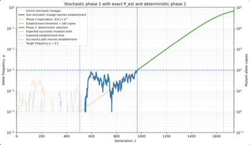
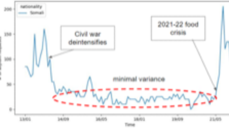
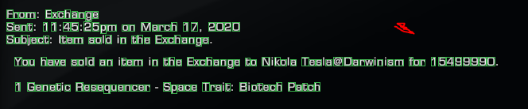

VLA sensitivity to VLM backbonesongoing
How does the choice of Vision Language Model (VLM) impact Vision Language Action (VLA) model capabilities?
RL and CV for robotics
MSc AI, Robotics @ TU Delft/EPFL
How does the choice of Vision Language Model (VLM) impact Vision Language Action (VLA) model capabilities?
Optimized PDE-constrained Darcy flow diffusion modelling, cutting training time ~20×. We show that established loss formulations are ill-formed.
A Go-stone placement benchmark showing that state-of-the-art VLA policies collapse to zero success under visual perturbation, because they never ground the coordinate named in the instruction.
Hyperspectral preprocessing, zero-shot single-image super-resolution and spectral-angle mineral mapping over AVIRIS-NG airborne surveys.
Which temporal action localization models hold up when training data, or training time, is the binding constraint.
Benchmarking data efficiency and computational efficiency of temporal action localization models. ICCVW 2023. arXiv:2308.13082
Five-parameter logistic learning curves that predict a TAL model’s full-dataset accuracy from runs on a tenth of the data, and say which architectures are still data-bound.
Efficient Temporal Action Localization model development practices. BSc thesis, TU Delft 2023. PDF


